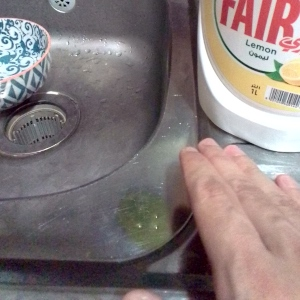

How to handle meat products
We all know that you need to clean your hands before and after handling any type of meat. But how can you hold the soap bottle after you have handled the meat? This is my solution
before you handle the meat add drops of soap on the counter top or sink. That way you can just use that without contaminating the soap bottle.
